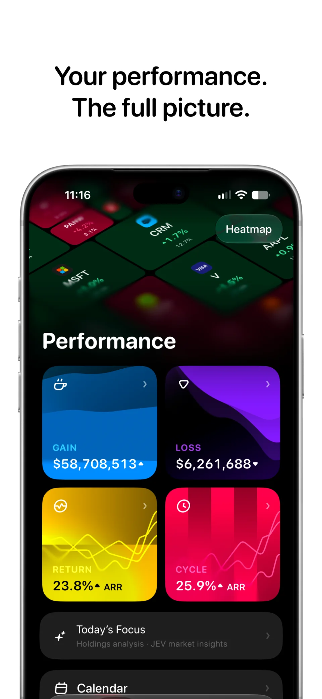
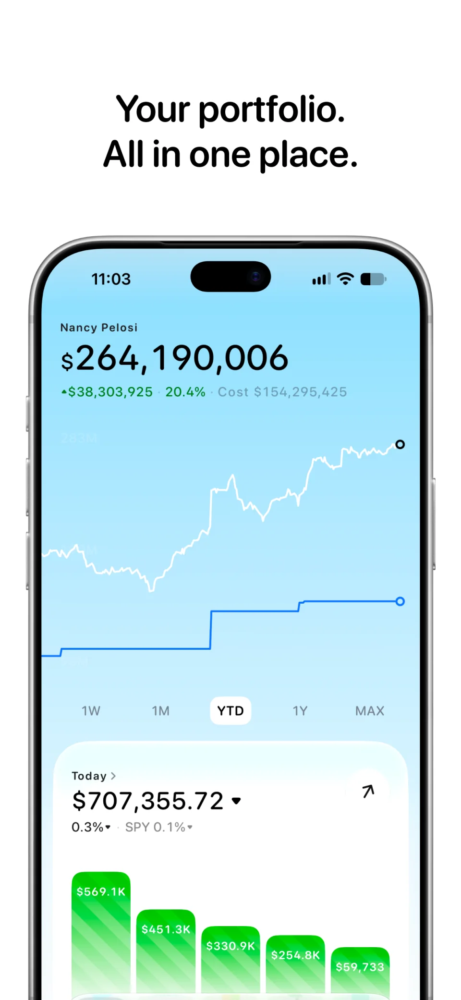
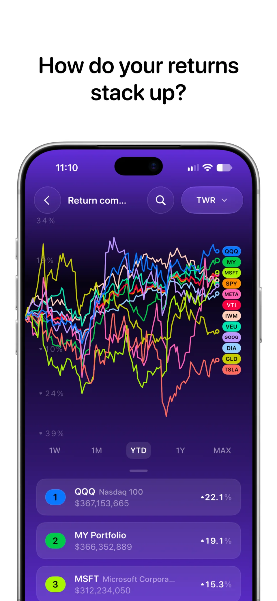
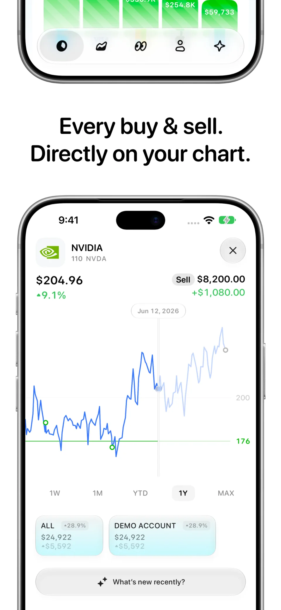
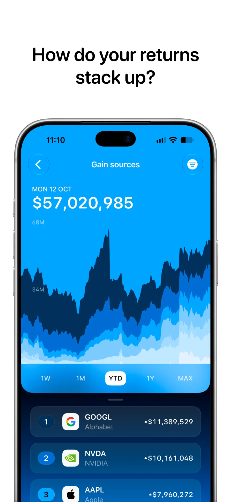
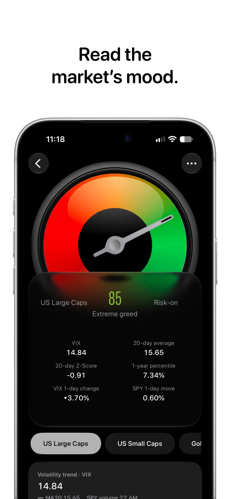

Catfolio
An iOS investment app, designed and built through an end-to-end AI workflow.



Your portfolio. One clear picture.
Catfolio started with a personal need: understanding investments spread across different accounts. Cost basis, individual trades, and overall returns were difficult to read together.
The iOS app brings those views into one place. It connects the portfolio overview to the details behind it: when a trade happened, where gains came from, and how returns compare with the market.



My role: from design to a working app.
I created Catfolio through an end-to-end AI workflow, bringing product direction, interface design, and implementation into one continuous process. AI helped turn ideas into working features; I shaped the priorities, information hierarchy, and visual detail.
Start with an investment question
Use the questions behind the numbers to define the product: what do I own, how is it performing, and what is driving the change?
Build and refine with AI
Turn a direction into a working interface, review it in context, and refine the layout, chart hierarchy, and interaction details through iteration.
Keep product judgment in the loop
Fast implementation makes it easy to add more. The harder design decision is choosing which views help someone understand their portfolio.
The details behind the balance.
Dividend breakdowns make income visible. Broker connections and CSV import bring accounts together. Investor tracking adds another way to explore portfolios.